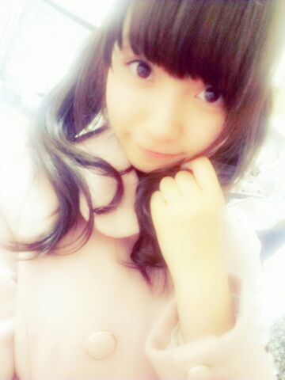

| 2012/11 15 Thu | ひめたん(*>ω<*)そ の233 |

そうです。
この間の写真の別ばーじょんです。
あのーねそのね
期末テストが近づいてきたわけですよ
(´・ω・｀)
Writingで学年1位叩き出してやんよー
なんて友達と意気込んでるわけですよー
だからもちょいしたらまた
日記書けそうにないから
許してくださーい(´;ω;`)るるる
今週日曜は似顔絵会からのー
B.L.T.カレンダーお渡し会＊
3rdのイベントはこれで最後かぁ...
4thも動き出してるし、
なんだか毎日がわひゃーて感じね
結構かたちになってきてるんだよ実は！
楽しみにしとってね∩^ω^∩
個人的に、
表題曲 [制服のマネキン] 結構すき。
ぐるカーもすーごいすきなんだけど
制服のマネキンも結構キテるー(*>ω<*)
アンダーのは
みんなもブログに書いてる通り
かわいらしい曲。
衣装もねかわいいのーふふふ＊
はよ情報解禁ならんかなーって感じよ◎
そうです。
この間の写真の別ばーじょんです。
あのーねそのね
期末テストが近づいてきたわけですよ
(´・ω・｀)
Writingで学年1位叩き出してやんよー
なんて友達と意気込んでるわけですよー
だからもちょいしたらまた
日記書けそうにないから
許してくださーい(´;ω;`)るるる
今週日曜は似顔絵会からのー
B.L.T.カレンダーお渡し会＊
3rdのイベントはこれで最後かぁ...
4thも動き出してるし、
なんだか毎日がわひゃーて感じね
結構かたちになってきてるんだよ実は！
楽しみにしとってね∩^ω^∩
個人的に、
表題曲 [制服のマネキン] 結構すき。
ぐるカーもすーごいすきなんだけど
制服のマネキンも結構キテるー(*>ω<*)
アンダーのは
みんなもブログに書いてる通り
かわいらしい曲。
衣装もねかわいいのーふふふ＊
はよ情報解禁ならんかなーって感じよ◎

 お弁当に絶対いれてほしいおかずは？
お弁当に絶対いれてほしいおかずは？
たまごやきー！
中元家は甘い派だよ(*^^*)
生クリーム・ガムシロ入ってるの♪
ひめたんの作るたまごやきは
ふぁみりーからも好評なのよー
今までの人生で1番嬉しかったことは?
いっぱいあるなあ(^^)
ひめたんは毎日何かしら
嬉しいこと起こるからなー
1番て言われたらなんだろう...
「ライバル」という言葉を聞いて、ひめたんが思い浮かぶ人物は誰かな？
乃木坂のライバルは
AKB48さんって名乗ってるけど
ほんとに恐縮ですー(´;ω;`)
在り来たりな言葉で申し訳ないけど
やっぱし一番のライバルは過去の自分。
ひめたんには、これだけはゆずれない（妥協できない）ってことや物はありますか？
ゆずれないってかこだわりってか
レッスンのあととか撮影のあととかに挨拶するときは
「お疲れ様でした」ってよりも
「ありがとうございました」なの。
何でだろう。スクール時代に自然と身に付いたものですーねきっと(｀・ω・´)
今の日芽香ちゃんにとって「大切なこと」って何ですか？
限界を決めないこと。
ちょっとだけ無理すること。
あとは、しっかり寝るこーと。どや
ひめたんの作った料理が見てみたいな
いつか作ったらアップするね(*^^*)
いつだろうーいつだろうなー♪
(＊´・ω・＊)ひめたん
コメント(152)
2012/11/15 01:36